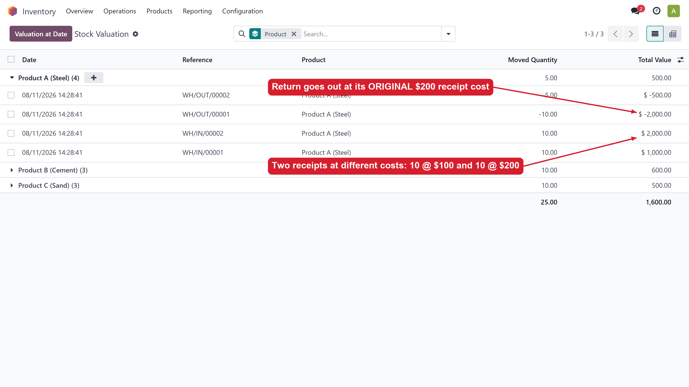
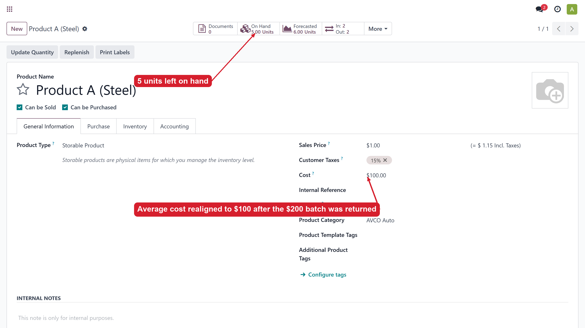
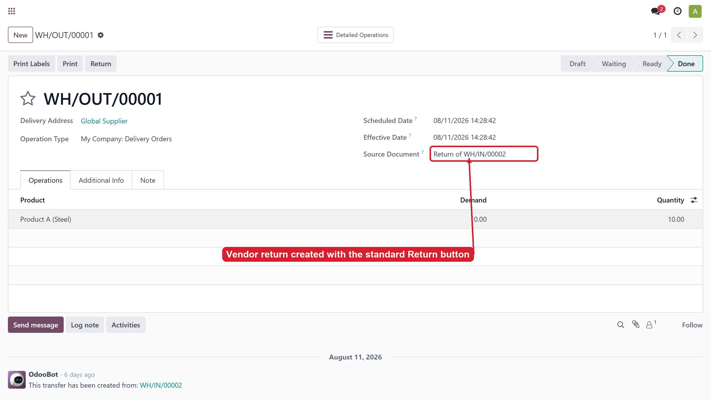

Stop average-cost distortion when goods bought at different prices are returned to the vendor
With the Average Cost (AVCO) method and no lot tracking, Odoo values a return to vendor at the current average cost — not at the price the returned goods were actually bought for.
Buy 10 pcs @ 100 and 10 pcs @ 200 (average = 150). Return the 200-batch: Odoo removes only 10 × 150 = 1,500 from stock, while the vendor credit note is 10 × 200 = 2,000. The remaining 10 cheap units stay valued at 1,500 instead of 1,000, the average cost stays 150 instead of 100, every later delivery books a wrong COGS, and a residue is stuck forever in the Stock Interim (Received) account.
When a return is created from the original receipt (the standard Return button), Odoo already knows which receipt the goods came from. This module uses that link:
| After returning the 200-batch | Standard Odoo | With this module |
|---|---|---|
| Return layer value | -1,500 (avg 150) | -2,000 (original 200) |
| Remaining 10 units valued at | 1,500 | 1,000 (their real cost) |
| Average cost after return | 150 | 100 |
| Interim (received) residue | 500 stuck forever | 0 |

Stock valuation after a vendor return: the returned batch leaves at its original receipt cost.

The product's average cost stays correct after the return.

Works with the standard Return flow on receipts — no extra steps.